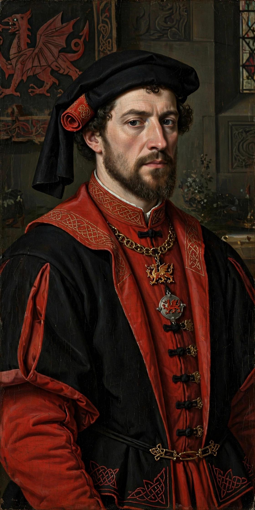

Owen Tudor
| Owen Tudor | |
|---|---|
| Born | c. 1400, Wales |
| Died | 2 February 1461, Hereford, England |
| Spouse | Catherine of Valois |
| Issue | Edmund Tudor; Jasper Tudor |
| House | Tudor |

Owen Tudor (Welsh: Owain ap Maredudd ap Tudur; c. 1400 – 2 February 1461) was a Welsh courtier and the second husband of Catherine of Valois, widow of King Henry V of England. Their clandestine marriage founded the fortunes of the Tudor family: Owen was the grandfather of Henry VII, the first Tudor king.
Early life and marriage
Owen came from an Anglesey family that had served the princes of Gwynedd; his father Maredudd ap Tudur had been involved in the revolt of Owain Glyndŵr. Owen entered the service of the English court, possibly as a soldier in France, and by the late 1420s was in the household of the dowager queen Catherine. The two married in secret around 1428–29, in defiance of a statute forbidding the queen's remarriage without royal consent.
Later life
After Catherine's death in 1437, Owen was briefly imprisoned but was pardoned and granted annuities by Henry VI, who treated his half-brothers Edmund and Jasper generously — Edmund was created Earl of Richmond and Jasper Earl of Pembroke. During the Wars of the Roses Owen supported the Lancastrian cause. He was captured after the Battle of Mortimer's Cross in 1461 and beheaded at Hereford by the victorious Yorkists under the future Edward IV.
Legacy
Owen's grandson Henry Tudor defeated Richard III at the Battle of Bosworth Field in 1485 and reigned as Henry VII, making Owen the patriarch of the Tudor dynasty.
See also: Edmund Tudor, Jasper Tudor, Henry VII.